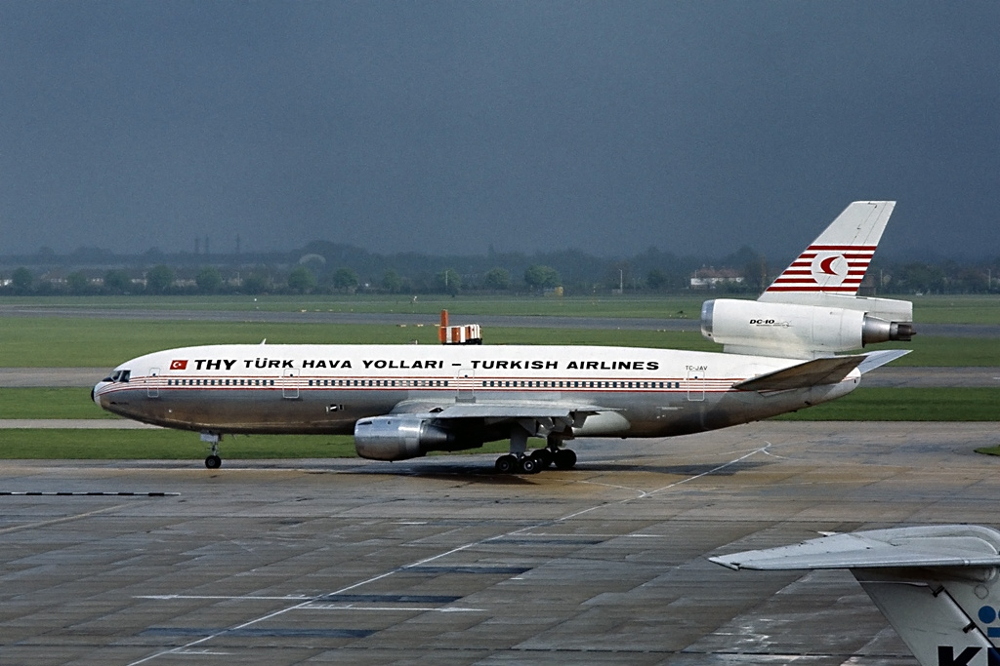

Turkish Airlines Flight 981 - 1974
The Aircraft
The aircraft, a DC-10 Series 10 (production designation Ship 29), was built in Long Beach, California, under the manufacturer's test registration N1337U, and leased to Turkish Airlines as TC-JAV on 10 December 1972. It was powered by three General Electric CF6-6D turbofan engines. The plane, together with four other DC-10-10s, were owned by Mitsui, and were originally intended to be purchased by All Nippon Airways, but the Japanese airline declined the aircraft in favor of the Lockheed L-1011 TriStar as a result of bribery by Lockheed. Three of the planes went to Turkish Airlines, while the two remaining went to Laker Airways.
The accident aircraft had 12 six-abreast first-class seats and 333 nine-abreast economy seats, for a total of 345 passenger seats. At the time of the accident, two people were seated in first class, while the economy class was fully occupied.
The flight crew was all Turkish. Flight attendant nationalities included four from the UK, three from France, and one from Turkey. Flight 981's Captain was Nejat Berköz, age 44, with 7,000 flying hours. First Officer Oral Ulusman, age 38, had 5,600 hours of flying time. Flight Engineer Erhan Özer, age 37, had 2,120 flying hours experience.
167 passengers flew on the Istanbul to Paris leg, and 50 of them disembarked in Paris. 216 new passengers, many of whom were supposed to fly on Air France, British European Airways, Pan Am, or TWA, boarded TK 981 in Paris, resulting in a 30-minute departure delay, Some passengers cancelled their tickets because of delays or a lack of seats.
The majority of the passengers were British, including members of an amateur rugby team from Bury St Edmunds, Suffolk, who were returning from a Five Nations match between France and England. Notable people on board were Briton John Cooper, who won silver medals in the men's 400 meters hurdles and the 4 × 400 meters relay at the 1964 Summer Olympics in Tokyo, and Jim Conway, general secretary of the British Amalgamated Engineering and Electrical Union.
The Disaster
.jpg)
Turkish Airlines Flight 981 was a scheduled flight from Istanbul Yesilköy Airport to London Heathrow Airport, with an intermediate stop at Orly Airport in Paris. On 3 March 1974, the McDonnell Douglas DC-10 operating the flight crashed into the Ermenonville Forest, outside Paris, killing all 346 people on board. The crash was also known as the Ermenonville air disaster. At the time, Flight 981 was the deadliest plane crash in aviation history until 27 March 1977, when 583 people perished in the collision of two Boeing 747s in Tenerife. It remained the deadliest single-aircraft accident until the crash of Japan Airlines flight 123 on 12 August 1985, and the deadliest aviation accident without survivors until the Charkhi Dadri mid-air collision on 12 November 1996.
It remains the deadliest single-aircraft accident without survivors. It is also the first fatal and deadliest crash involving the McDonnell Douglas DC-10, as well as the deadliest aviation accident to occur in France.
The crash occurred when an incorrectly secured cargo door at the rear of the plane burst open and broke off, causing an explosive decompression that severed critical cables necessary to control the aircraft. To maximize the working space within the cargo hold, the cargo doors opened outwards, leading to the possibility of them being forced open at altitude under normal in-flight pressure. To prevent this, a special latching system was used that locked shut under pressure when properly closed. To ensure the latches were properly positioned, a handle on the outside of the door pressed small metal pins into the latches; if the latches were in the improper location the pins would not align and the handle would not close.
In previous service, notably an incident that occurred on American Airlines Flight 96 in 1972, it had been noticed that it was possible to close the handle on DC-10 cargo doors despite the latches being in the wrong position. This was because the linkage between the handle and the pins was too weak and allowed the handle to be forced into the closed position.
A minor change had been ordered to install a support plate for the handle linkage to make it stronger; manufacturer documents showed this work as completed on the aircraft involved in Flight 981, but the plate had not in fact been installed. It was also noted that the handle on the crash aircraft had been filed down at an earlier date to make it easier to close the door.
Finally, the latching had been performed by a baggage handler who did not speak Turkish or English, the only languages provided on a warning notice about the cargo door's design flaws and the methods of compensating for them. After the disaster, the latches were redesigned and the locking system significantly upgraded.
In the following investigation, it was found that a similar set of conditions, which had caused the failure of an aircraft floor following explosive decompression of the cargo hold, had occurred in ground testing in 1970 before the DC-10 series entered commercial service. The smoking gun was a memo from the fuselage's manufacturer, Convair, to McDonnell Douglas, in which the series of events that occurred on Flight 96, and fatally on Flight 981, was foreseen; it concluded that if these events occurred it would probably result in the loss of the aircraft. In spite of this warning, nothing was done to correct the flaw. One of the eventual consequences was the largest civil lawsuits to that date.